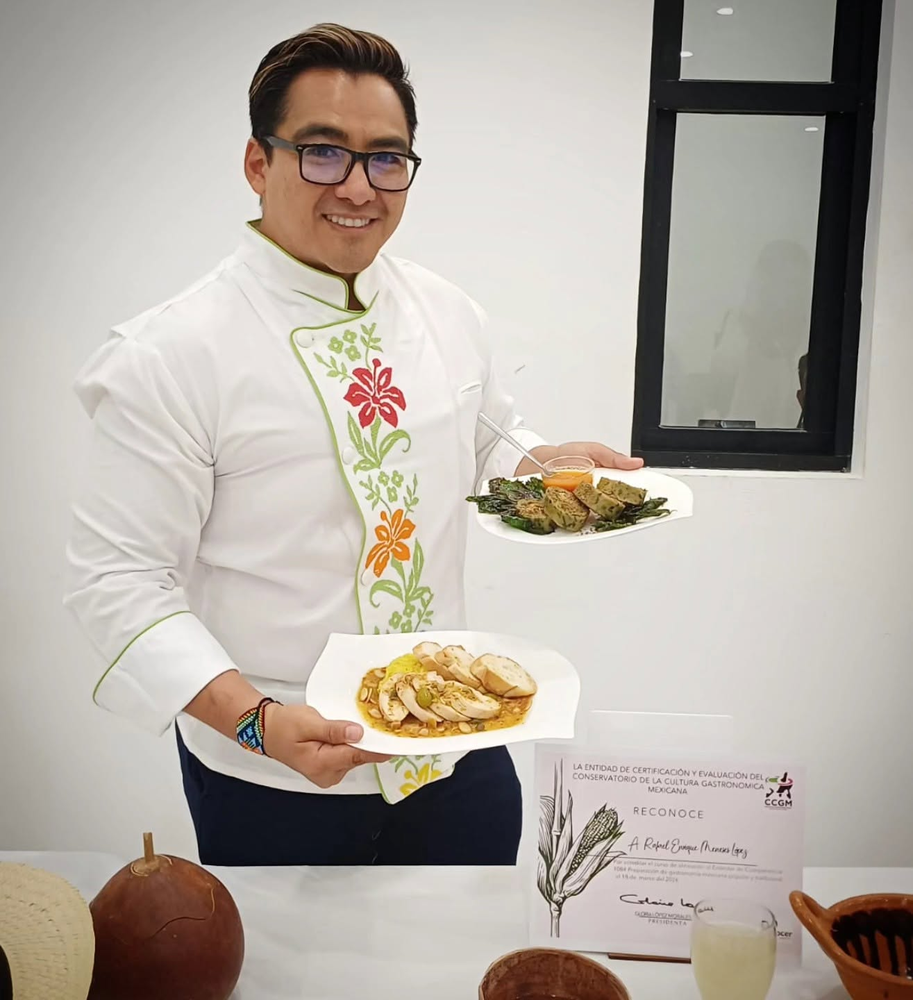
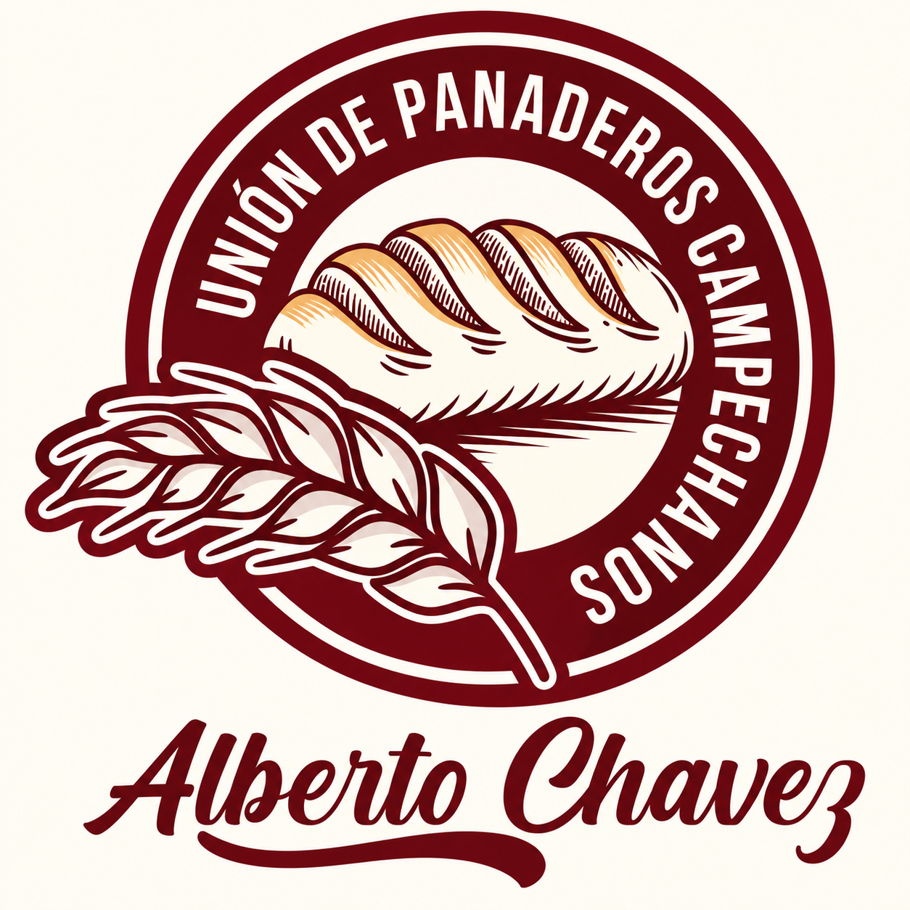
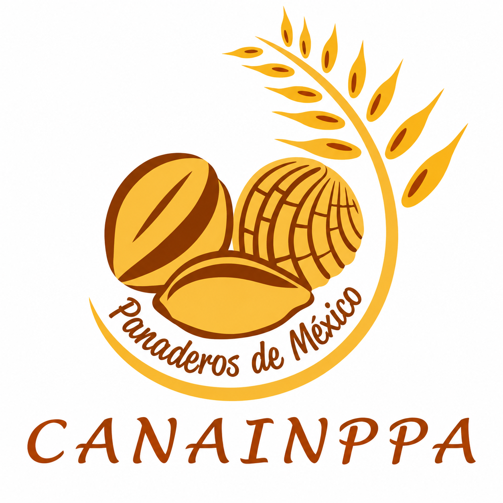

Vive una experiencia académica, cultural y gastronómica en el Instituto Tecnológico Superior de Escárcega.

El Congreso Turístico Gastronómico del ITSE busca impulsar el rescate de la identidad comunitaria mediante actividades académicas, talleres, ponencias y experiencias culinarias enfocadas en el turismo sostenible y la riqueza gastronómica regional.

Gestión de destinos turísticos
.

Gestión de destinos turísticos
El Dr. Rafael Enrique Meneses López es Licenciado en Gastronomía, Maestro en Gestión de Empresas Turísticas y Doctor en Proyectos por la Universidad Internacional Iberoamericana. Actualmente se desempeña como Secretario General del Instituto Campechano y Profesor Investigador de Tiempo Completo en las áreas de Gastronomía y Turismo, con reconocimiento de Perfil PRODEP. Su trayectoria profesional, desarrollada durante más de diecisiete años, se ha concentrado en la educación superior, el turismo gastronómico, la investigación, la gestión cultural y la salvaguarda del patrimonio cultural inmaterial, particularmente del patrimonio alimentario de Campeche.

ponencia magistral "Del platillo a la experiencia: gestión del patrimonio gastronómico para el turismo"
Omar Ismael Ramírez Hernández es Doctor en Estudios Turísticos por la Universidad Autónoma del Estado de México (UAEMex), Maestro en Competitividad Turística y Especialista en Dirección de Organizaciones Turísticas por la Universidad de Colima, y Licenciado en Turismo por la Universidad Autónoma del Estado de México (UAEMex). Se ha desempeñado como profesor de asignatura de la Licenciatura en Turismo en el Centro Universitario UAEM Valle de Teotihuacán del 2013 y hasta el 2017; así como Profesor de Tiempo Completo de la Licenciatura en Turismo en el Centro Universitario UAEM Temascaltepec desde el 2017 hasta 2022.
Actualmente es Profesor Investigador de Carrera, de la Licenciatura en Gestión del Turismo Alternativo, en el Campus Chetumal de la Universidad Autónoma del Estado de Quintana Roo; donde se desempeña como coordinador del Doctorado en Desarrollo sostenible. Su línea de investigación versa sobre la planificación y los impactos del turismo. Cuenta con el reconocimiento del Perfil deseable de la Secretaría de Educación Pública (SEP) y del Sistema Nacional de Investigadoras e Investigadores (SNII nivel 1); fue vocal del consejo directivo durante 2018-2021 y secretario para el periodo 2021-2024 de la Academia Mexicana de Investigación Turística (AMIT). Ha participado en proyectos de investigación relacionados al ámbito turístico, publicación de artículos en revistas científicas mexicanas e internacionales y participado en diferentes eventos académicos.
En 2015, obtiene la beca “Proyecta 100,000” para profesores del Estado de México, la cual le otorga el financiamiento para realizar un curso de perfeccionamiento del idioma inglés en Notre Dame of Maryland University, institución ubicada en los Estados Unidos de América. Además, en 2017 consiguió una beca-financiamiento en el Instituto de Investigaciones Dr. José María Luis Mora, del Distrito Federal para desarrollar la investigación titulada “Gobernanza y Capital Social; semejanzas, diferencias y nuevas oportunidades de estudio”. Adicionalmente, durante el 2013 se desempeñó como Prestador de Servicio Profesionales en el programa de extensionismo rural llevado a cabo en el estado de Colima, donde capacitó a prestadores de servicios turísticos de los municipios de Comala, Tecomán y Cuauhtémoc.
Tradiciones comunitarias del sur de campeche y evaluador de concurso culinario
Docente especializado en alimentos y bebidas, comprometido con transmitir conocimientos actualizados y habilidades reales para el servicio, la producción y la gestión dentro del sector gastronómico.

Agroresiduos con valor: Ingredientes funcionales para una gastronomía sostenible
Ponencia relacionada con Cocina Tradicional Mexicana.
Próximamente se agregará la información curricular y profesional de la ponente.

Over Tourism: Caso Playa Balandra, La Paz, B.C.S.
Ponencia relacionada con Cocina Tradicional Mexicana.
Próximamente se agregará la información curricular y profesional de la ponente.

Cocina Tradicional Mexicana
Ponencia relacionada con Cocina Tradicional Mexicana.
Próximamente se agregará la información curricular y profesional de la ponente.
ponencia magistral "Del platillo a la experiencia: gestión del patrimonio gastronómico para el turismo"
.
Ponencia magistral "Del platillo a la experiencia: gestión del patrimonio gastronómico para el turismo"
El Dr. Rafael Enrique Meneses López es Licenciado en Gastronomía, Maestro en Gestión de Empresas Turísticas y Doctor en Proyectos por la Universidad Internacional Iberoamericana. Actualmente se desempeña como Secretario General del Instituto Campechano y Profesor Investigador de Tiempo Completo en las áreas de Gastronomía y Turismo, con reconocimiento de Perfil PRODEP. Su trayectoria profesional, desarrollada durante más de diecisiete años, se ha concentrado en la educación superior, el turismo gastronómico, la investigación, la gestión cultural y la salvaguarda del patrimonio cultural inmaterial, particularmente del patrimonio alimentario de Campeche.
.
Del platillo a la experiencia: gestión del patrimonio gastronómico para el turismo
Omar Ismael Ramírez Hernández es Doctor en Estudios Turísticos por la Universidad Autónoma del Estado de México (UAEMex), Maestro en Competitividad Turística y Especialista en Dirección de Organizaciones Turísticas por la Universidad de Colima, y Licenciado en Turismo por la Universidad Autónoma del Estado de México (UAEMex). Se ha desempeñado como profesor de asignatura de la Licenciatura en Turismo en el Centro Universitario UAEM Valle de Teotihuacán del 2013 y hasta el 2017; así como Profesor de Tiempo Completo de la Licenciatura en Turismo en el Centro Universitario UAEM Temascaltepec desde el 2017 hasta 2022.
Actualmente es Profesor Investigador de Carrera, de la Licenciatura en Gestión del Turismo Alternativo, en el Campus Chetumal de la Universidad Autónoma del Estado de Quintana Roo; donde se desempeña como coordinador del Doctorado en Desarrollo sostenible. Su línea de investigación versa sobre la planificación y los impactos del turismo. Cuenta con el reconocimiento del Perfil deseable de la Secretaría de Educación Pública (SEP) y del Sistema Nacional de Investigadoras e Investigadores (SNII nivel 1); fue vocal del consejo directivo durante 2018-2021 y secretario para el periodo 2021-2024 de la Academia Mexicana de Investigación Turística (AMIT). Ha participado en proyectos de investigación relacionados al ámbito turístico, publicación de artículos en revistas científicas mexicanas e internacionales y participado en diferentes eventos académicos.
En 2015, obtiene la beca “Proyecta 100,000” para profesores del Estado de México, la cual le otorga el financiamiento para realizar un curso de perfeccionamiento del idioma inglés en Notre Dame of Maryland University, institución ubicada en los Estados Unidos de América. Además, en 2017 consiguió una beca-financiamiento en el Instituto de Investigaciones Dr. José María Luis Mora, del Distrito Federal para desarrollar la investigación titulada “Gobernanza y Capital Social; semejanzas, diferencias y nuevas oportunidades de estudio”. Adicionalmente, durante el 2013 se desempeñó como Prestador de Servicio Profesionales en el programa de extensionismo rural llevado a cabo en el estado de Colima, donde capacitó a prestadores de servicios turísticos de los municipios de Comala, Tecomán y Cuauhtémoc.
texto
Ponencia relacionada con Turismo Sustentable.
Próximamente se agregará la información curricular y profesional de la ponente.
Agroresiduos con valor: Ingredientes funcionales para una gastronomía sostenible
Ponencia relacionada con Cocina Tradicional Mexicana.
Próximamente se agregará la información curricular y profesional de la ponente.
Acceso a kayak, cuatrimotos, tirolesa, bicicletas y senderismo.
Espacios académicos con especialistas invitados.
Presentación de investigaciones y trabajos académicos.
Exposición visual de proyectos y propuestas.
Actividades prácticas enfocadas al turismo y gastronomía.
Muestra y exposición de artesanías regionales.
Exhibición y promoción de productos locales y regionales.
Competencia gastronómica enfocada en la identidad cultural.
Espacio de convivencia e integración para asistentes.
Sé parte del 1er Congreso Turístico Gastronómico del Instituto Tecnológico Superior de Escárcega y vive una experiencia académica, cultural y gastronómica única.
Instituciones, empresas y organizaciones que hacen posible este gran encuentro gastronómico y turístico.



